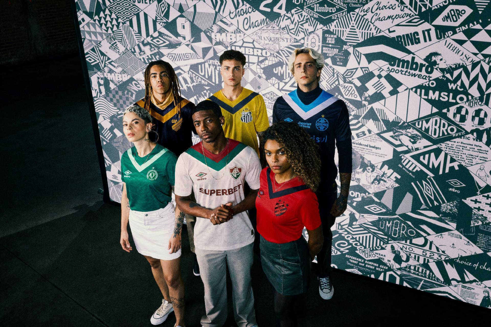
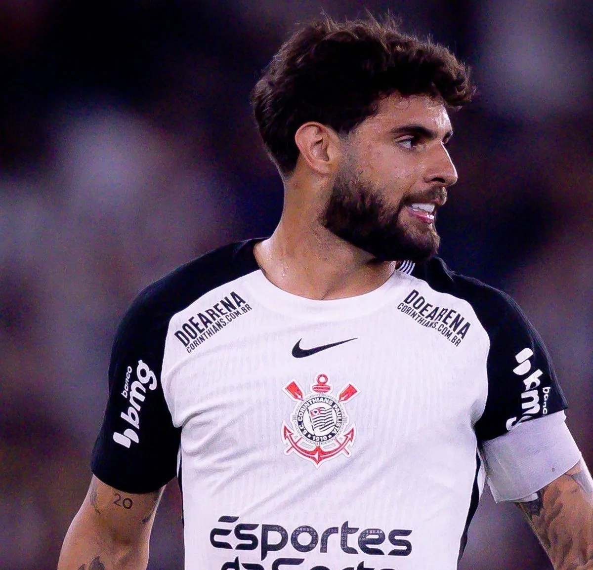
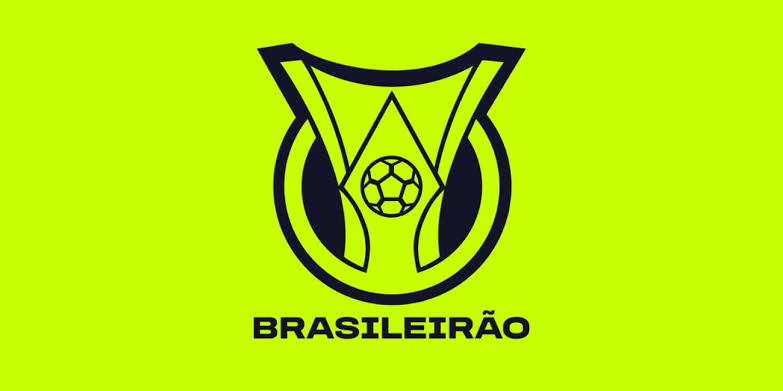

Confira, em primeira mão, todos os lançamentos e detalhes dos novos uniformes que vão vestir os gigantes do esporte!.

O Corinthians definiu que pretende receber pelo menos 22 milhões de euros, aproximadamente R$ 140 milhões, para negociar o atacante Yuri Alberto. O jogador despertou interesse de clubes europeus, incluindo a Lazio, da Itália.

Um levantamento divulgado em outubro de 2026 mostrou que 13 dos 20 clubes da Série A do Campeonato Brasileiro tinham compromissos financeiros em atraso. Entre os problemas estão dívidas com jogadores, funcionários e outros clubes. A situação reforça a importância do planejamento financeiro no futebol, para que as equipes consigam manter seus elencos e contratar reforços sem aumentar suas dificuldades econômicas.
O Fair Play Financeiro vem preocupando diversos clubes do futebol brasileiro. Segundo notícias divulgadas em outubro de 2026, 24 dos 40 clubes das Séries A e B estão sob risco de punições por causa de dívidas e pagamentos atrasados. Corinthians, Atlético-MG e São Paulo estão entre os clubes com maiores dívidas. A partir do fim de novembro, equipes que não regularizarem suas pendências poderão sofrer sanções, como multas, restrições para contratar jogadores e até perda de pontos. Diante desse cenário, alguns clubes tentam conseguir mais tempo para organizar suas finanças, enquanto o novo sistema busca tornar o futebol brasileiro mais equilibrado e responsável financeiramente.